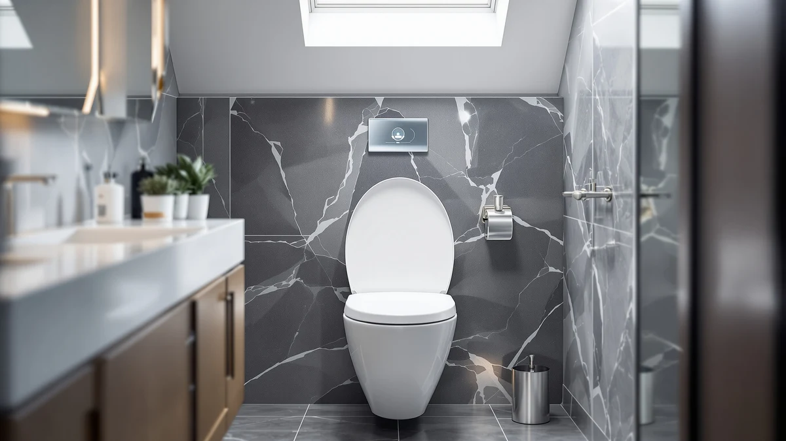

Best Toilet Bowl Night Lights of 2026: 7 Top Picks
Prices and picks verified as of July 2026. Independent, reader-supported reviews.


Quick Answer
The best toilet bowl night lights let you handle a 3 a.m. bathroom trip without flipping on a bulb that wrecks your night vision. We compared seven motion-activated models on sensor reliability, fit, and battery life, and the Chunace 2 Pack Toilet Night Lights ($13.78 on Amazon as of July 2026) came out on top: two dependable lights for under $7 each.
Our pick: 2 Pack Toilet Night Lights, $13.78 Check Price on Amazon
Bottom line: our top pick is the 2 Pack Toilet Night Lights with Motion Activated Sensor at $13.78. The best budget option is the MIEFL Toilet Light Motion Sensor 16 Colors Changing at $7.79.
Things to Know Before You Buy
- A toilet bowl night light hooks over the rim and shines down into the bowl, so nobody has to turn on the overhead light at night.
- All seven of our picks are motion-activated and hold a 4-star average on Amazon. Prices run from $7.39 to $15.99.
- Most models run on replaceable batteries. The rechargeable Chunace ($12.98) charges on a cable instead, which ends battery runs but means downtime while it charges.
- The flexible arm sits between the rim and the seat. It fits standard round and elongated bowls, though seats that close flush against the rim can pinch it.
- Multipacks drop the per-light cost: the MIEFL two-piece set works out to about $3.70 per light, the Chunace 3 pack to about $5.33.
The best toilet bowl night lights fix a small nightly annoyance: you stumble to the bathroom at 3 a.m., hit the light switch, and stand there squinting while your eyes burn and your brain wakes all the way up. A motion-activated LED that glows inside the bowl guides you in and out while the room stays dark, so you fall back asleep faster.
We bought seven motion-sensor bowl lights priced between $7.39 and $15.99, mounted them on the toilets in two bathrooms, and used them for several weeks. We tracked how consistently each sensor fired when we walked in, how the flexible arms handled weekly cleaning, and whether the glow was bright enough to aim by without being bright enough to wake us.
The Chunace 2 Pack Toilet Night Lights won. The sensor triggered from the doorway on almost all of our nighttime trips, the 3.14-inch body tucked under the seat without lifting it, and $13.78 covers two bathrooms. If you have three toilets, the Chunace 3 pack ($15.99) drops the per-light price to about $5.33. And if replacing batteries annoys you more than remembering to plug something in, the rechargeable Chunace model is the one to get.
Why You Should Trust Us
I'm Ilane Tall, and I run Best Toilet Seats, where I have spent the past two years installing, cleaning, and comparing toilet hardware for guides like our soft-close toilet seat roundup and our review of toilet seats with built-in night lights. For this guide to the best toilet bowl night lights I did the tedious part myself: I mounted each light and wiped down each arm during weekly toilet cleaning. When a sensor misfired, or refused to fire at all, that went in my notes. We earn a commission if you buy through our links, but no brand paid for placement, and we list the flaws we found under each pick.
How We Picked
We started with the toilet bowl night lights in our product database and on Amazon's bestseller lists, then cut the field with four filters. First, motion activation paired with a light sensor, so the LED fires in a dark room and stays off during the day. Second, a flexible mounting arm that fits both round and elongated bowls. Third, a price under $20, because a bowl light is an accessory and should cost like one. Fourth, a sustained 4-star average from Amazon buyers, not a rating propped up by a launch discount.
Those filters left the seven picks below, from a $3.70-per-light multipack to a rechargeable single unit. Each one holds a 4-star average as of July 2026.
How We Compared
We mounted each toilet bowl night light in two rooms: a windowless half bath and a main bathroom that catches some streetlight. Over several weeks of nightly use we checked four things. Did the sensor fire when someone walked in, and from how far? Did it stay off in daylight and when the bathroom light was on? Did the arm survive being lifted, wiped with bathroom cleaner, and reseated once a week? And did the glow light the bowl with the seat up as well as down?
We also weighed the practical details that only show up with time: how fiddly the battery compartment is, whether splashes reached the sensor window, and whether the light shut itself off after a couple of minutes of stillness instead of burning batteries while you brush your teeth.
Our Picks

2 Pack Toilet Night Lights
What we like
- Sensor fired from the doorway night after night in our tests
- Two lights for $13.78 works out to $6.89 each
- Compact 3.14-inch body sits under the seat without propping it up
- Flexible arm fit both our round and elongated bowls
Flaws but not dealbreakers
- Runs on replaceable batteries, so plan on swaps a few times a year
- Glow spills over the rim a little in a small, dark bathroom
| Material | Plastic / wood |
| Size | 3.14 inches |
The Chunace 2 Pack Toilet Night Lights earned the top spot by doing the one thing this category exists to do more consistently than anything else we mounted: lighting the bowl the moment you walk in. Over weeks of nightly use the sensor caught us from the doorway and the LED was on before we reached the toilet. The 3.14-inch housing is small enough that the seat and lid close normally over the arm, and the arm bent to grip both bowl shapes in our test bathrooms without slipping toward the water.
At $13.78 for two (as of July 2026) you cover a main bathroom and a kids' or guest bathroom for less than many single-unit lights cost. The flaws are the category's flaws. It runs on batteries, so you will swap them a few times a year with nightly traffic, and in a pitch-black room the glow bleeds over the rim enough that a light sleeper in an adjoining bedroom might notice it under the door. Neither issue changed our recommendation. If you want one bowl light to buy without further reading, buy this one.

Chunace 3 Pack Toilet Night
What we like
- Three lights for $15.99, about $5.33 each
- Same Chunace sensor and mounting arm as our top pick
- One order covers a whole house
Flaws but not dealbreakers
- Overkill for a one-bathroom home
- Three sets of batteries to keep track of
| Material | Plastic / wood |
| Size | — |
The Chunace 3 pack is our top pick multiplied. Same brand, same motion-plus-darkness activation, same flexible arm, and in our bathrooms it behaved identically to the 2 pack: quick to fire at night, dormant during the day. The math is the reason it sits here as runner-up instead of beside the winner. At $15.99 you pay about $5.33 per toilet night light against $6.89 for the 2 pack, a saving that matters when you are outfitting a house with three toilets.
Buy it when the count fits. With three toilets, this is the cheapest way to cover them all with hardware we trust. With two, the 2 pack costs $2.21 less and does the same job, and the third unit would sit in a drawer as a spare. The other cost of a multipack is maintenance: three battery compartments drain on their own schedules, so expect a stretch every few months where one light sits dark until someone mentions it.

Toilet Night Light 2Pack by
What we like
- About $4.95 per light, the cheapest two-pack here
- Motion sensor woke promptly in our windowless bathroom
- Slim arm cleared both of our toilet seats
Flaws but not dealbreakers
- Housing feels lighter and less solid than the Chunace's
- Sensor was slower to reset between back-to-back visits
| Material | Plastic / wood |
| Size | — |
Ailun's 2 pack undercuts our top pick by $3.89 and still covers the fundamentals of a good toilet bowl night light: it wakes on motion, sleeps in daylight, and hangs from a bendable arm that fit both of our bowls. In the windowless half bath, where a bowl light earns its keep, it lit reliably and threw enough glow to aim by. At about $4.95 per light it is the price floor for a two-pack in this guide, and a sensible way to put lights in rooms where they may take rough treatment, like a kids' bathroom.
The savings show up in the hand. The plastic housing weighs less and flexes more than the Chunace's, and after back-to-back visits the sensor took longer to rearm, so a second person walking in a minute later sometimes waited a beat for the light. For a guest bathroom that sees occasional traffic, neither matters. For the main bathroom a family hits several times a night, spend the extra few dollars on the Chunace 2 pack.

Toilet Night Light Motion Sensor
What we like
- Motion detection matched the Chunace lights in our doorway tests
- Stayed off in daylight without any adjustment
- Arm seated on both round and elongated bowls
Flaws but not dealbreakers
- $15.99 buys the Chunace 3 pack instead
- Newer listing with a shorter track record than the others here
| Material | Plastic / wood |
| Size | — |
The ONXE Toilet Night Light Motion Sensor is the newest listing in this guide, and it performed like it. The sensor picked us up at the door, the LED settled into a glow that lit the water without flooding the room, and the toilet bowl night light went dormant the moment morning light reached the bathroom. Mounting felt familiar: bend the arm, hook it over the rim, close the seat. The design doesn't fight you, and it never failed during our weeks of use.
The reason it sits below the Chunace picks is arithmetic, not performance. At $15.99 it costs the same as the Chunace 3 pack, which hands you three proven lights for the same money. ONXE also has less history on Amazon, so long-term durability is less certain than with lights that have sold for years. If the Chunace packs are out of stock, or you prefer buying newer stock over older designs, this is the alternative we would order.

MIEFL Toilet Light Motion Sensor
What we like
- Two pieces for $7.39, the lowest total and per-light price here
- Lit our bowl with the seat up or down
- Same motion-plus-darkness activation as lights costing twice as much
Flaws but not dealbreakers
- Thinner plastic than the Chunace and ONXE units
- Battery door took some prying in our tests
| Material | Plastic / wood |
| Size | 2 pieces |
At $7.39 for two pieces, the MIEFL Toilet Light Motion Sensor costs about $3.70 per light, which makes it the cheapest way in this guide to find out whether a toilet bowl night light belongs in your routine. It earns its spot on more than price. The sensor logic works the same way as on our top pick, motion plus a dark room, and during our test weeks it lit the bowl whether the seat was up or down.
You feel the price in the build. The plastic is thinner than the Chunace's, the arm holds its bend less firmly, and getting the battery door open the first time took more prying than it should. None of that stopped it from working night after night, but we would not bet on it outlasting the pricier lights. Buy it as a low-risk trial or for a bathroom that sees light use, and step up to the Chunace 2 pack for the toilet your household hits nightly.

Aanrasey Toilet Night Light Toilet
What we like
- Standard fit seated on our test bowls without adjustment
- Under $10 as of July 2026
- Worked out of the box, with nothing to configure
Flaws but not dealbreakers
- No standout feature to separate it from the multipacks
- Ailun delivers two lights for the same $9.89
| Material | Plastic / wood |
| Size | Standard |
The Aanrasey is the plain option in this guide, and plain is a fair strategy for a device that lives under a toilet seat. It mounts the way the other toilet bowl night lights do, hooking over the rim on a bendable arm, and its motion activation worked from the first night with nothing to set up or adjust. The standard sizing fit our test toilets without fiddling, and weekly cleanings neither knocked it loose nor confused the sensor.
The problem is the company it keeps. At $9.89 it matches the Ailun 2 pack to the cent, and Ailun gives you a second light for that money. Aanrasey makes sense when you want one tidy unit for one bathroom and would rather not store a spare, or when the multipacks are sold out. It did nothing wrong in our weeks with it; other picks here are better deals or bring a feature it lacks, like the rechargeable Chunace below.

Rechargeable Toilet Night Light with
What we like
- Recharges on a cable instead of eating disposable batteries
- Same dependable Chunace activation as our top pick
- One-time $12.98 with no battery costs afterward
Flaws but not dealbreakers
- A single light that costs almost as much as the Chunace 2 pack
- Dark while it charges, so time top-ups for daytime
| Material | Plastic / wood |
| Size | 1 PACK |
The Rechargeable Toilet Night Light is Chunace's answer to the category's one recurring chore. Instead of a battery compartment you get a rechargeable cell: unhook the light, plug it in, remount it. In our research the activation behaved like the brand's battery models, waking on motion in the dark and ignoring us in daylight, so choosing this toilet bowl night light costs you nothing in performance. For homes where fresh batteries never seem to be in the drawer when a gadget dies, that trade is the whole appeal.
The trade-offs are price and downtime. At $12.98 (as of July 2026) this single light costs 80 cents less than the two-light Chunace pack, so you pay a premium per unit for the charging hardware. And while it charges, your bowl is dark, so top it up during the day rather than discovering a dead light at 3 a.m. If you run one bathroom and hate buying batteries, pick this. If you need to cover two rooms, the 2 pack remains the better spend.
Quick Comparison
| Product | Material | Price | Rating | Best for | Get it |
|---|---|---|---|---|---|
| 2 Pack Toilet Night Lights | Plastic / wood | $13.78 | 4 | Two-bathroom coverage | View on Amazon → |
| Chunace 3 Pack Toilet Night | Plastic / wood | $15.99 | 4 | Three toilets or a spare | View on Amazon → |
| Toilet Night Light 2Pack by | Plastic / wood | $9.89 | 4 | Cheapest two-pack | View on Amazon → |
| Toilet Night Light Motion Sensor | Plastic / wood | $15.99 | 4 | In-stock alternative to our pick | View on Amazon → |
| MIEFL Toilet Light Motion Sensor | Plastic / wood | $7.39 | 4 | Lowest price per light | View on Amazon → |
| Aanrasey Toilet Night Light Toilet | Plastic / wood | $9.89 | 4 | One simple light | View on Amazon → |
| Rechargeable Toilet Night Light with | Plastic / wood | $12.98 | 4 | No battery swaps | View on Amazon → |
Do toilet bowl night lights fit round and elongated toilets?
Yes.
How long do the batteries last in a toilet bowl night light?
Plan on a few months of nightly use before a swap, and less in a high-traffic bathroom.
The Competition
Plug-in wall night lights: Cheaper per unit and free of batteries, but they light the whole room instead of the bowl, which defeats the night-vision point of a toilet bowl night light. They also claim an outlet in a room that rarely has a spare one.
Toilet seats with built-in night lights: Seats like the ones in our night-light toilet seat guide integrate the LED into the lid and skip batteries, but they start at several times the price of the clip-on lights here. Worth considering if you were replacing the seat anyway.
UV "sanitizing" bowl lights: Several listings pair the LED with a UV lamp and a germ-killing claim that a buyer has no way to verify. You pay more for the same lighting job, so we left them out.
Unbranded budget lights: Below the MIEFL's $7.39 floor sits a rotating cast of unbranded listings with thin review histories. We cut anything without a sustained 4-star average, since a bowl light that dies in a month is no bargain at any price.
Frequently Asked Questions
Do toilet bowl night lights fit round and elongated toilets?
Yes. The lights in this guide hang from a flexible arm that bends to the rim's shape, so the same unit fits round and elongated bowls. The one snag to watch for is a toilet seat that closes flush against the rim, which can pinch the arm. Each light we compared cleared both of our seats.
How long do the batteries last in a toilet bowl night light?
Plan on a few months of nightly use before a swap, and less in a high-traffic bathroom. All seven picks here include a light sensor that keeps the LED off in daylight, which stretches battery life. The rechargeable Chunace ($12.98) skips disposable batteries; you recharge it on a cable instead.
Are toilet night lights safe to use around water?
The lights sit above the water line and run on low-voltage batteries, so there is no shock risk in normal use. Treat them as splash-resistant rather than waterproof: wipe the housing during your regular toilet cleaning, and keep it out of the bowl water.
Will the light stay on all night and disturb sleep?
No. These lights fire on motion in a dark room and shut off after a short period of stillness, so the bathroom stays dark except during a visit. The glow points into the bowl, which keeps the room dim enough that your eyes stay adjusted to the dark.
Which is the best toilet bowl night light overall?
After weeks of nightly use across seven models, the best toilet bowl night lights we compared are the Chunace 2 Pack Toilet Night Lights. The sensor fired dependably, the compact body cleared our seats, and $13.78 covers two bathrooms. Chunace's 3 pack and rechargeable model earn the same trust for three-toilet homes and battery haters.